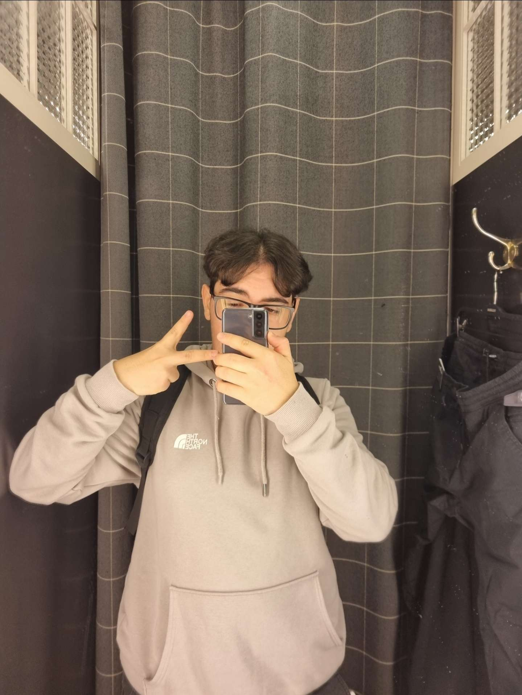

Kiss Máté vagyok, Dánszetmiklóson élek egy kis faluban ami Pest megyében található. A Ceglédi SZC Közgazdasági és Informatikai Technikumba járok már 4 éve.

Gombási Márk vagyok, Dánszetmiklóson élek. Nagyon szeretek vezetni illetve a barátaimmal lenni.
Farkas Bence vagyok, Cegléd külterületén élek. Hobbijaim közé tartozik a foci és egyéb sportok.
Kiss Máté vagyok, Dánszetmiklóson élek egy kis faluban ami Pest megyében található. A Ceglédi SZC Közgazdasági és Informatikai Technikumba járok már 4 éve.
Farkas Bence vagyok, Cegléd külterületén élek. Hobbijaim közé tartozik a foci és egyéb sportok.